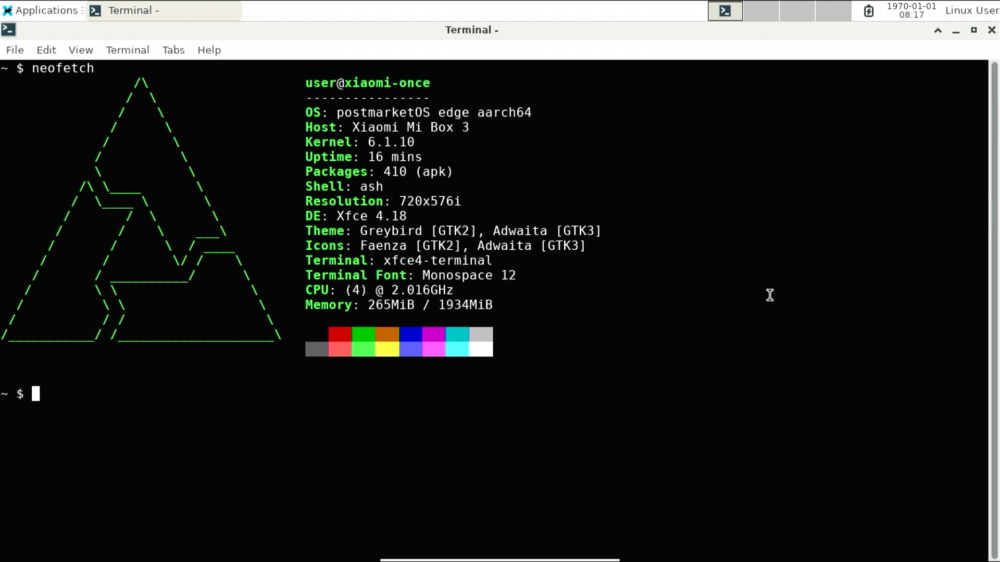

Xiaomi Mi Box 3 (xiaomi-once)
|
 Running XFCE4 | |
| Manufacturer | Xiaomi |
|---|---|
| Name | Mi Box 3 |
| Codename | xiaomi-once |
| Released | 20XX |
| Category | testing |
| Original software | Android TV |
| Original version | 6.0.1 |
| Extended version | 9 |
| Hardware | |
| Chipset | Amlogic S905X-H |
| CPU | Quad-core 1.5 GHz Cortex-A53 |
| GPU | Mali-450 MP3 |
| Display | HDMI |
| Storage | 4/8 GB |
| Memory | 1/2 GB |
| Architecture | aarch64 |
{kind=link}
| USB Networking | |
|---|---|
| Flashing |
Broken
|
| Touchscreen |
Unavailable
|
| Display |
Works
|
| WiFi |
Works
|
| FDE | |
| Mainline | |
| Battery |
Unavailable
|
| 3D Acceleration |
Works
|
| Audio |
Partial
|
| Bluetooth |
Works
|
| Camera |
Unavailable
|
| GPS |
Unavailable
|
| Mobile data |
Unavailable
|
| SMS |
Unavailable
|
| Calls |
Unavailable
|
| USB OTG / USB-C Role switching | |
| NFC |
Unavailable
|
| Accelerometer |
Unavailable
|
|---|---|
| Magnetometer |
Unavailable
|
| Ambient Light |
Unavailable
|
| Proximity |
Unavailable
|
| Hall Effect |
Unavailable
|
| Barometer |
Unavailable
|
| Power Sensor | |
| Camera Flash | |
|---|---|
| Keyboard |
Unavailable
|
| Touchpad |
Unavailable
|
| USB-A |
Unavailable
|
| HDMI/DP | |
| Ir TX | |
| Ir RX | |
| Stylus | |
| Haptics | |
| Ethernet | |
| FOSS bootloader |
Works
|
This port is only tested on the mda-16-ab variant. If you get it working on the mda-16-aa variant then please let us know. Thanks! |
There are 2 variants:
- Mi Box 3/
mda-16-ab, running Android TV and sold everywhere else. - Mi Box 3C/
mda-16-aa, running MIUI TV and sold in China. Seems to only have 4GB of storage and 1GB of RAM.
Some people succeeded at flashing the mda-16-ab firmware to an mda-16-aa set-top box though.
Note that these instructions are only expected to work on the mda-16-ab variant.
Contents
Note about the stock u-boot
If running Android 8/7/6
It can be intercepted when it is booting.
It will load either aml_autoscript (more info) or recovery.img (android recovery mode image), both at the root of a USB stick, the latter being booted when Android TV and the recovery mode aren't bootable.
If running Android 9
You're out of luck! You need to downgrade to Android 8.
Installation
| WARNING: DO NOT PLUG multiple USB devices to the TV box when it boots. DO NOT PLUG USB drives that had pmOS installed to the TV box when it boots into Android because Android will destroy file permissions! |
Before doing everything here, please follow the instructions in Downgrading from Android 9 to Android 8.
Only installing to a USB drive works currently.
Use pmbootstrap to build your own image, like so:
$ pmbootstrap init
$ pmbootstrap install --sdcard=/dev/sdX # change 'sdX' with the path of your USB drive
After you created the image, connect the UART to your Mi Box.
Next, intercept U-Boot when it's booting. You should get a shell.
U-Boot will run commands that are saved in the bootcmd environment variable. By default bootcmd contains commands to load Android TV. |
Run these commands to modify the default boot behavior and reboot:
once# setenv bootandroid ${bootcmd}
once# setenv bootcmd "usb start;ext4load usb 0:1 ${loadaddr} aml_autoscript;autoscr ${loadaddr}"
once# saveenv
once# reset
Downgrading from Android 9 to Android 8
| WARNING: THIS WILL ERASE ALL DATA ON YOUR MI BOX. CONSIDER YOURSELF WARNED. |
There's a guide for downgrading from Android 9 to 8: https://forum.xda-developers.com/t/mi-box-3-mdz-16-ab-downgrade-android-9-pie-to-android-8-oreo.4194075/
If that guide doesn't work, try this:
- Plug a USB drive into your computer and format it as FAT32
- Download https://mega.nz/file/gh0xCCrR#ctdPivezVFNAuMLq19eOepO1LHJCfVNhowmZz7Fx87s
- Extract
update.zipandxiaomi_updatefrom the zip file, as well asrecovery.imgfromupdate.zipand put them at the root of your USB drive - Power your Mi Box on and boot it into the recovery mode
- Plug your USB drive to it
- 'Apply update from EXT' > 'From Udisk' >
update.zip(note: "Udisk" is a translation error in the recovery) - Flash and reboot! Your Mi Box should reboot a few times. You should see a progress bar after that. (It only flashed U-Boot, and Android 9 isn't bootable from it, and thus it loads
recovery.imgfrom the USB drive, which runsxiaomi_update) - After that, it's going to boot into Android 8, which will fail. It's then going to boot into recovery mode and you should see the following error message: "Cannot load Android system. Your data may be corrupt. If you continue to get this message, you may need to perform a factory data reset and erase all user data stored on this device."
- 'Factory data reset' > 'Yes'
- Reboot
- Done!
Recover back to the default booting behavior
Run these commands:
once# setenv bootcmd ${bootandroid}
once# setenv bootandroid
once# saveenv